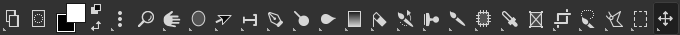
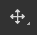
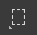
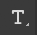
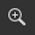
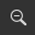
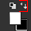
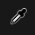

Основные функции которые нам нужны

Инструмент "Перемещение" (актив. на клавиатуре "V(рус.М)"
Данный инструмент используют для перемещения любого объекта в нашем проекте
Инструмент "Прямоугольная область" (актив. на клавиатуре "М(рус.Ь)"
Данный инструмент мы можем использовать для того, чтобы выделить область которую мы захотим зарисовать
Инструмент "Кисть" (актив. на клавиатуре "B(рус.И так же ПКМ мыши по холсту)"
Основной инструмент которым мы будем пользоваться
Инструмент "Горизонтальный текст" (актив. на клавиатуре "T(рус.Е)"
С помощью данного инструмента мы можем печатать текст на нашем фото

Инструмент "Масштаб" (актив. на клавиатуре "Z(рус.Я)"
Данный инструмент имеет в себе 2 функции: увеличивать и уменьшать. Данные функции появляются в верхней панели инструменов при применении данного инструмента

Инструмент "Масштаб увелечение"
Данным инструментом наша картинка увеличивается в ту область где находится курсор мыши

Инструмент"Масштаб уменьшение"
Данным инструментом наша картинка уменьшается и становится по центру рабочей области
Инструмент "Выбор цвета"
Данный инструментом мы будем выбирать нужный нам цвет, можно сохранять до 2-х цветов

Смена на 2-ой цвет
По щелчку на две стрелочки которые направлены в разные стороны мы можем менять наш цвето на 2-ой
